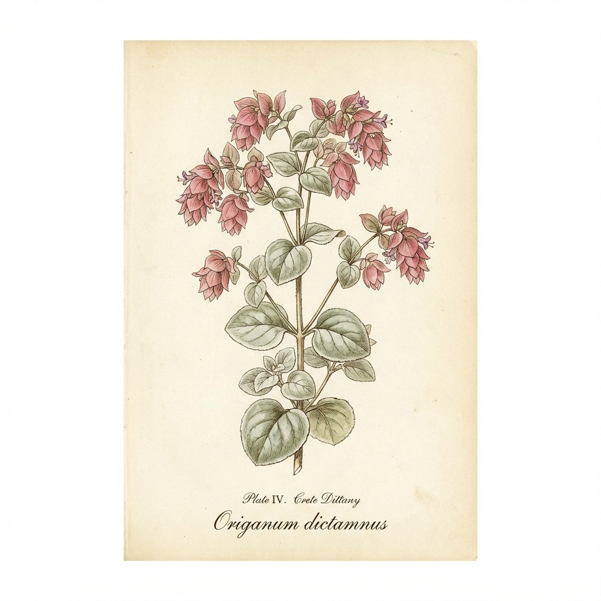

🌿'">
1. Diktamos (Kreta-Diptam)
Origanum dictamnus
🗣️ Lokale Namen: Δίκταμος, Erontas (Liebesblume)
📍 Fundorte in Griechenland
NUR auf Kreta! Endemisch. Felsen der Weißen Berge, Dikti-Gebirge. Geschützt!
💊 Heilwirkung
- Legendär - Seit der Antike als Wunderkraut
- Wundheilung - Beschleunigte Heilung
- Antibakteriell - Bei Magen-Darm-Beschwerden
- Wehentreibend - Traditionell bei Geburten
📋 Anwendung
Tee: Das Nationalgetränk Kretas. Aromatisch und heilend.
⚠️ Streng geschützt! Nur aus lizenziertem Anbau. Nicht selbst sammeln.